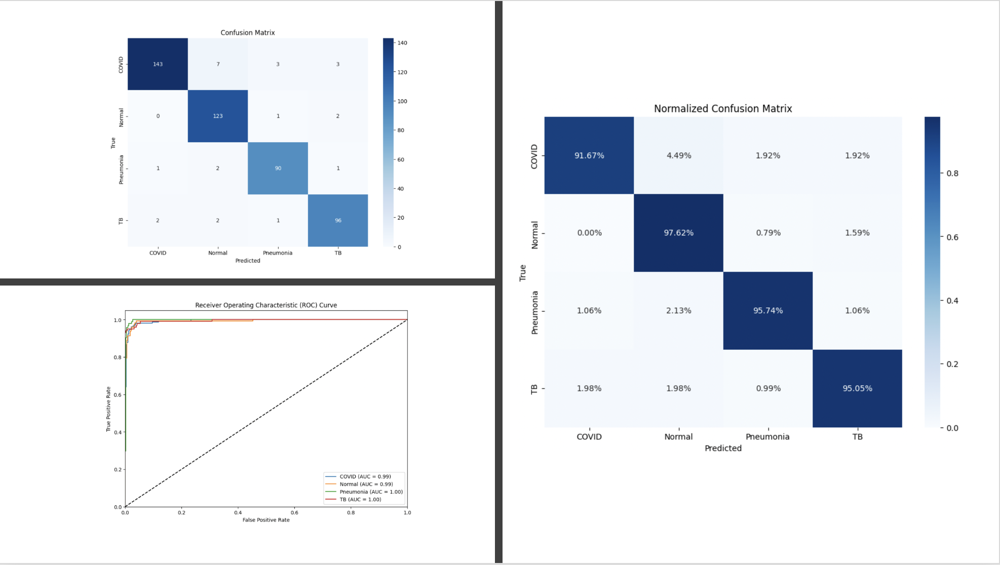
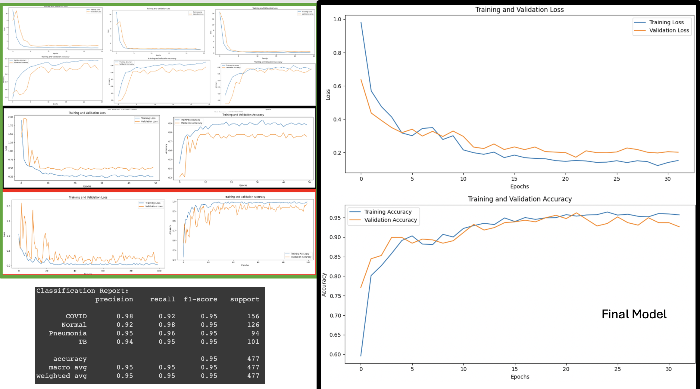

AI Model for Detecting COVID-19, Pneumonia, and Normal Lungs from X-ray Images
X-ray of a Normal Lung
This image represents a normal, healthy lung X-ray. The AI model accurately identifies such images, ensuring that normal cases are not misdiagnosed.
X-ray of a Lung with COVID-19
Depicting a lung X-ray of a patient with COVID-19, this image highlights the model's ability to detect COVID-19-specific patterns in lung images.
X-ray of a Lung with Pneumonia

An X-ray showing a lung affected by pneumonia. The model accurately distinguishes between pneumonia and other conditions.
Training Data Augmentation Process
Illustrates the data augmentation techniques applied during training, such as rotations, shifts, and flips, to enhance model robustness.
Model Architecture Visualization
A detailed diagram of the architecture of Model 4, showing convolutional layers, batch normalization, and fully connected layers.
Training Loss and Accuracy Curves
Graphs showing the training loss and accuracy over epochs for Model 4, demonstrating the model's learning progression.
Confusion Matrix

Summary
COVID:
- 20 True Positives
- 1 False Negative (predicted as Normal)
- 0 False Negatives (predicted as Pneumonia)
- 1 False Positive (predicted as COVID)
- 11 True Positives
- 0 False Negatives (predicted as Pneumonia)
- 0 False Positives (predicted as COVID)
- 0 False Positives (predicted as Normal)
- 18 True Positives
- The model performs excellently in classifying Pneumonia, with no misclassifications (100% accuracy for Pneumonia).
- The model shows high accuracy in classifying COVID with only one misclassification as Normal.
- There is some difficulty in distinguishing Normal cases, as there is one misclassification as COVID.
- Overall, the model demonstrates strong performance across all classes with minimal misclassifications.
Image 8: Development History
Development history charts and best model highlight.